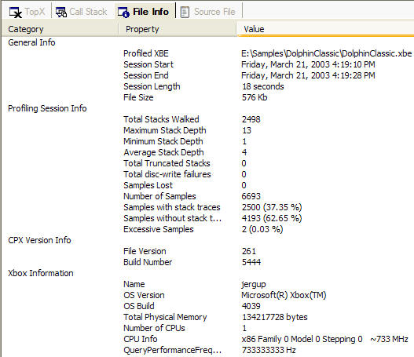

CPX File Info View
The File Info view gives information about the profiling session.

The view is divided into four categories:
General Info
This category has the following properties:
- Profiled XBE
- Full path and file name of the profiled title.
- Session Start
- Starting time of the profiling session.
- Session End
- Ending time of the profiling session.
- Session Length
- Length of the profiling session in seconds.
- File Size
- Size of the .cpx file.
Profiling Session Info
This category has the following properties:
- Total Stacks Walked
- Number of stacks walked during sampling. Typically, because call stacks are cached, this value is less than the total number of samples.
- Maximum Stack Depth
- Maximum stack depth of the profiled title.
- Minimum Stack Depth
- Minimum stack depth of the profiled title. This value should always be one.
- Average Stack Depth
- Average stack depth of the profiled title.
- Total Truncated Stacks
- Number of stacks that were too deep to walk completely.
- Total Disc-Write Failures
- Total number of disc failures when writing data.
- Samples Lost
- Total number of lost samples. If this number is large relative to the total number of samples, it is recommended that you re-profile the title.
- Number of Samples
- Total number of samples collected.
- Samples with stack traces
- Number of samples resulting in a stack trace. This should be the same as the total number of stacks walked.
- Samples without stack traces
- Number of samples that did not require a stack trace since the call stack was cached.
- Excessive Samples
- Number of samples that occured during DPC or at some other time when a call stack would be unavailable.
CPX Version Info
This category has the following properties:
- File Version
- CPX file version number.
- Build Number
- Build number of the XDK.
Xbox Information
This category has the following properties:
- Name
- Name of the target Xbox.
- OS Version
- Always Microsoft® Xbox®.
- OS Build
- Build number of the target Xbox kernel.
- Total Physical Memory
- Physical memory size of the target Xbox. Should be 134217728 bytes.
- Number of CPUs
- Always one.
- CPU Info
- Always x86 Family 0 Model 0 Stepping 0 ~733 MHz.
- QueryPerformanceFrequency()
- Exact speed of the CPU. Always 733333333 Hz.